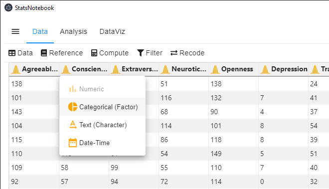

There are four major variable types in StatsNotebook: Categorical, Numeric, Date and Character. By default, when data is loaded into StatsNotebook, the variables are either Numeric or Character variables.
Categorical variables are variables that have two or more categories. For example, sex is a categorical variable that we can code into male and female. Another exapmle is color, which we can code into Yellow, Red, Orange, etc. For many analyses, we will also need to specify the reference category
In R, we will need to specify categorical variables as factor variables.
Numeric variables are variables that measured in number. Examples are height and weight.
Date is a variation of numeric variable that is used for Time Series analysis.
Chracter variables contain character string. Address and Name are examples of character variable. These variables contains textual information and are not normally used for statistical analysis. By default, Categorical variable such as Sex (Male/ Female) will be coded as Character variable and we will need to convert them into Categorical variable manually.
To change the type of a variable, we can

currentDataset$Sex <- factor(currentDataset$Sex, exclude = c("", NA))